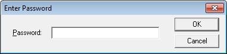
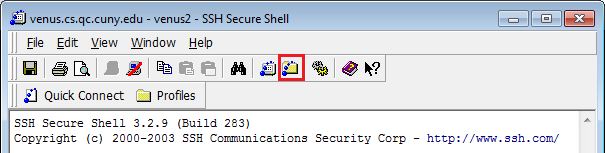

Algorithmic Problem Solving with C++
Algorithmic Problem Solving with C++ Our goal in this course is to train ourselves to become better problem solvers by employing “algorithms”. As a tool to solve these problems, we’ll learn parts of C++.
What is C++?
C++ is a programming language that allows us humans to tell a computer what to do. As far we know, a computer cannot figure out what they are supposed to do on their own. Thus, we need to tell it what to do in forms of “programs” which we create using programming languages. Each programming language has its own rules that you must follow precisely or the program will not work.
How does programming work?
You write the source code using C++. The source code is nothing more than plain, readable text that you can write/edit with any text editor. That source code is then translated by a complier and complies your code into code that the machine can understand known as machine code, bunch of 0s and 1s. Your computer reads and executes the machine code.
Venus
Venus is the CS department’s server, which runs the Unix operating system. On Venus you will be able to compile and run your programs.
Logging In
Computers in the computer labs:
Username – First 2 letters of your last name, followed by first 2 letters of first name, and followed by the last 4 digits of your CUNY first ID (all lowercase)
Password – 8 digits of CUNY first ID
For example: Student name is Alex Chen and CUNYfirst ID is 12345678. Login Username is chal5678 and Password is 123345678
Venus Server
Host name: venus.cs.qc.cuny.edu
Connecting to Venus (Windows):
Download and install SSH and then run the program. If you're on the school computer, no need to install SSH, its on the desktop. Open the program. Click on Profiles -> Add Profile.
Type in whatever profile name you like and click Add to Profiles.
Click Profiles -> Edit Profiles. Fill in the Host name and User name and click OK (See login information above)
Click Profiles -> [whatever you named your profile]. Type your password (see login information above) and click OK.

Transferring Files
After logging in, click the New File Transfer button

The left side shows files on your computer. The right side shows files on Venus You can drag and drop to upload/download files. You can also drag and drop from the SSH window to either your desktop or Windows Explorer.
Mac Users
You can compile and run your source code locally on your machine without logging into Venus. Access to your file is straight forward and you can submit whatever files that you have created locally with ease.
-
Go to Applications/Utilities folder. There you will find Terminal, open it.
-
Once in terminal, you can use any Unix command. See below.
-
If this is the first time you are using your Terminal, chances are you haven't installed Command Line Developer Tools yet. There will be a pop up like this below
- Click on Install. There is no need to get Xcode.
- You are ready to create and compile your C++ source code using the same Unix commands that you used in class.
Login onto Venus on Mac
Use the command ssh to login into
ssh your_username@venus.cs.qc.cuny.edu
It will prompt you for your password. NOTICE when you type your password, nothing shows. That normal your computer did not freeze. Enter your password and hit enter. This screen should display.
Unix Commands
Below are some common Unix commands.
| Files and Navigation | |
| cd [folderName] | Change the current directory |
| cd .. | Go to parent directory |
| ls | List the files in the current directory |
| mkdir [folderName] | Create a new folder |
| pwd [fileName] | Print the path of the current directory |
| rm [fileName] | Delete a file |
| rmdir [folderName] | Delete an empty folder |
| up key | Previous command (press up multiple times to see your command history) |